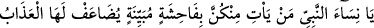
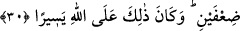

Rasûlullah (s.a.)’in sevgisi hak iledir haz ile değildir. Cennet sevgisi ise hak ile değil
haz iledir. Çünkü cennet nefsin hazzıdır. Nitekim Allah Teâlâ: “Orada sizin için
canlarınızın çektiği her şey vardır.” (Fussılet, 41/31) buyurmuştur. Hz. Peygamber
(s.a.)’i sevmek ve O’na uymak, kulu Allah sevgisine götürür. Nitekim Allah Teâlâ : “De
ki: Eğer Allâh’ı seviyorsanız bana uyun ki Allah da sizi sevsin.” (Âl-i İmran, 3/31)
buyurmuştur.
Molla Câmî der ki:
Benim Arap, Medîneli, Kureyşli bir sevdiğim var,
Onun derdi ve gamı, mutluluk ve sevincin mayası olur.
O Arap, ben ise Acemim, onun sırrını anlayamam,
Onunla sohbet nasıl açayım, o Kureyşli, ben Habeşli,
Onun aşkıyla raks eden zerre gibiyim,
Nihâyet o kızıl güneşle âlemde meşhur oldu.
Gerçi gözümden yüz kat uzaktadır,
Ama her sabah ve akşam onun yüzü gözümün önündedir.
30. Ey peygamber hanımları! Sizden kim açık bir hayâsızlık yaparsa, onun azabı
iki katına çıkarılır. Bu, Allâh’a göre kolaydır.
“Ey peygamber hanımları!” Hitabın onlara yöneltilmesi, onlara nasihatta bulunmaya
önem verildiğini ortaya koymak içindir. Burada ve bundan sonraki âyetlerde Hz.
Peygamber (s.a.)’e izafe edilerek onlara hitap edilmesi, onlar hakkında gelen hükümler
bu izâfete bağlı olduğu içindir.
“Sizden kim” çirkinliği “açık bir hayâsızlık yaparsa,” beğenilmeyen bir iş,
çirkinliği ileri derecede olan bir kötülük, yâni büyük bir günah işlerse “onun azabı iki
katına çıkarılır.” Yâni başkalarının azâbının iki katıyla/misliyle azâb edilirler.
Bu âyetin, Allah Teâlâ’nın (Rasûlullah (s.a.)’e hitaben): “Allâh’a ortak koşarsan
mutlaka amelin boşa gider.” (ez-Zümer, 39/65) buyurması gibi olduğu söylenmiştir.
Yoksa onlardan böyle açık bir günah işleyen var demek değildir. İbn Abbâs (r.a.)
burada baş kaldırmanın ve kötü ahlâkın kasdedildiğini söylemiştir. Râğıb ise şöyle
demiştir: “__WORD__ fiillerden ve sözlerden çirkinliği pek büyük olandır.”
Fakir (Bursevî) der ki: Herhalde İbn Abbas (r.a.)’ın sözünün izahı şöyledir: Hz.
Peygamber (s.a.)’in hanımlarının şerefleri ve makamlarının yüksekliği sebebiyle
onlardan meydana gelen kötü ahlâk gibi bir zelle/ufak bir hata ve yanlış, onlara nisbetle